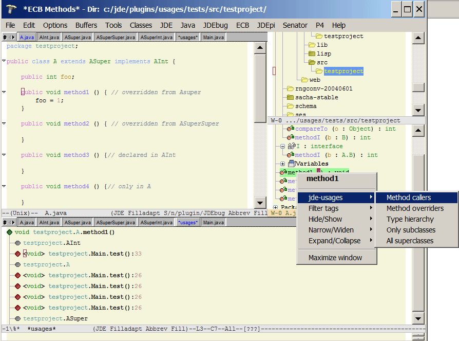
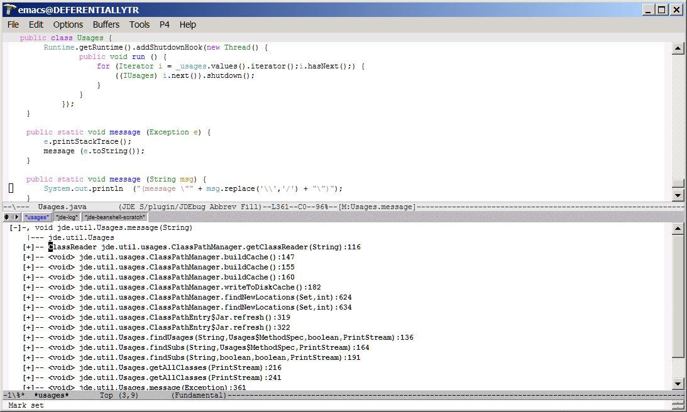
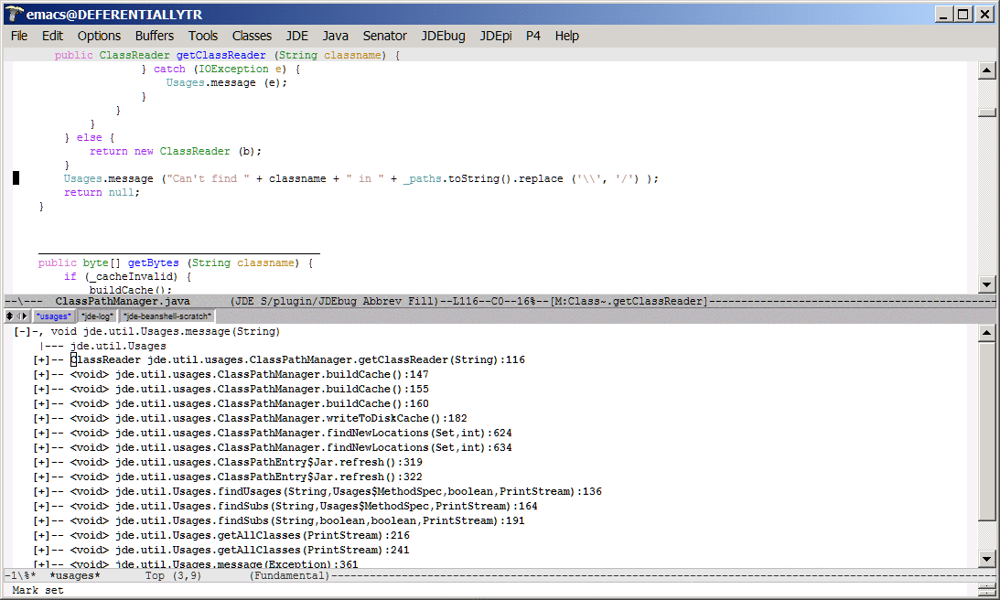
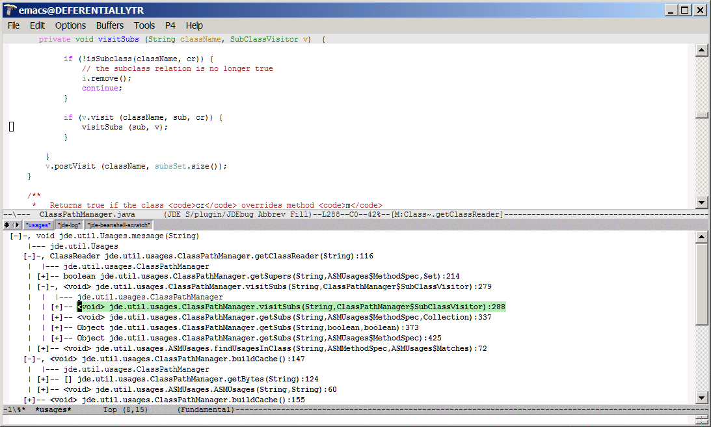

Version 0.9.1 (using JDEE 2.3.5, CEDET 1.0pre2 and Windows CVS Gnu Emacs 22.0.50.2)
Usages tree for testproject.A.method1(). Static class A.D also has a method called
method1 but it is not related to the method in class A.
A superclass tree for testproject.A.C
The usages sub-menu in the ECB methods buffer
Version 0.9
Open file <jde-install-dir>/plugins/usages/src/jde/util/Usages.java. and go to line 361.

Here are the usages.
Hitting <Enter> takes you to the line of source which makes the call.
You can expand each line into usages for the method containing the line of code.
